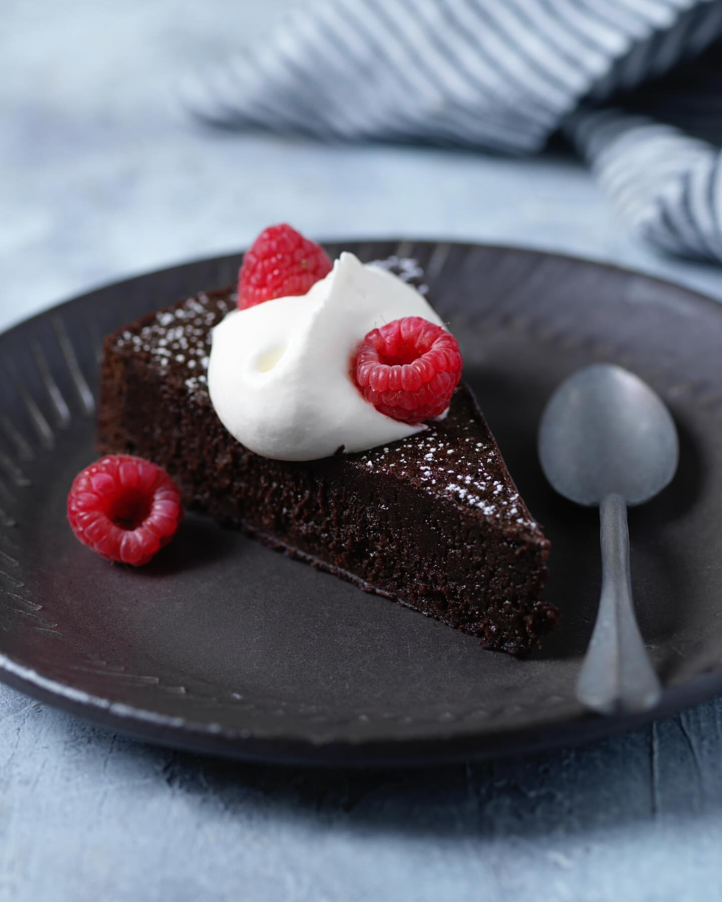
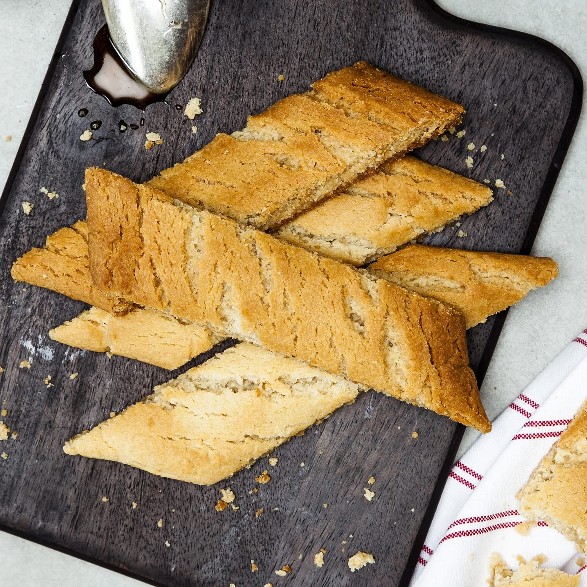
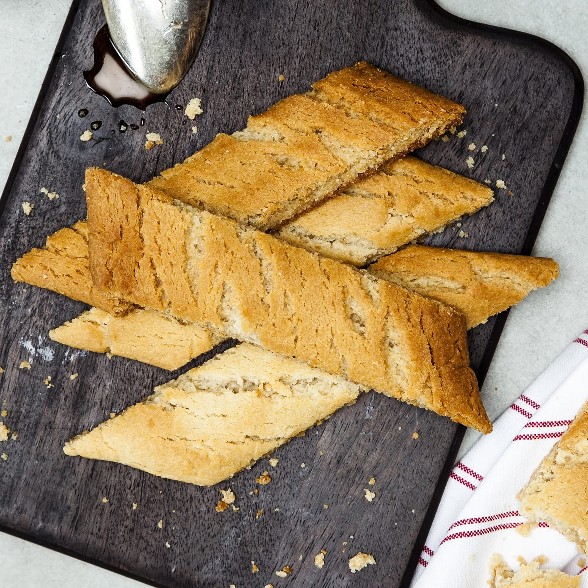

Receptsida
På sidan presenteras till exempel klassiska godsaker som kladdkaka, chokladbollar och kolasnittar. Här får man tips på ingredienser, tillagning och baktekniker för att enkelt kunna skapa egna läckerheter hemma.

Tillbaka hem
Kladdkaka
Kladdkaka är en svensk klassiker som är seg och chokladig i mitten. Perfekt tillsammans med grädde eller glass.
Ingredienser
100 g smör
2 ägg
2,5 dl socker
1,5 dl vetemjöl
3 msk kakao
Gör så här
Smält smöret.
Vispa ägg och socker lätt.
Blanda i smör, mjöl och kakao.
Häll smeten i en form.
Grädda i 175 grader ca 20 min.
Kalorier
Ingrediens Kalorier Smör 717 Ägg 150 Socker 960 Vetemjöl 550 Kakao 60
Lämna en kommentar
Tillbaka hem
Chokladbollar
Chokladbollar är enkla att göra, goda att äta och kräver ingen ugn. Ett perfekt bakverk för alla åldrar.
Ingredienser
100 g smör
3 dl havregryn
1 dl socker
2 msk kakao
1 tsk vaniljsocker
2 msk kaffe
Gör så här
Blanda alla torra ingredienser.
Tillsätt smör och kaffe.
Forma till bollar.
Rulla i kokos eller pärlsocker.
Ställ kallt innan servering.
Kalorier
Ingrediens Kalorier Smör 717 Havregryn 350 Socker 400 Kakao 50 Kaffe 5
Lämna en kommentar
Namn:
Tillbaka hem
Kolasnittar
Kolasnittar är sega och spröda småkakor med smak av kola. En favorit till kaffet!
Ingredienser
100 g smör
1 dl socker
2 msk sirap
2,5 dl vetemjöl
1 tsk bakpulver
Gör så här
Vispa smör, socker och sirap.
Blanda i mjöl och bakpulver.
Dela degen i längder.
Platta till och grädda i 175 grader i ca 12 min.
Skär i snittar direkt efter gräddning.
Kalorier
Ingrediens Kalorier Smör 717 Socker 400 Sirap 300 Vetemjöl 550 Bakpulver 5
Lämna en kommentar
Namn:
Detta är en extra notis om att alla recepten är enkla att baka hemma.
 
Tillbaka hem

Tillbaka hem